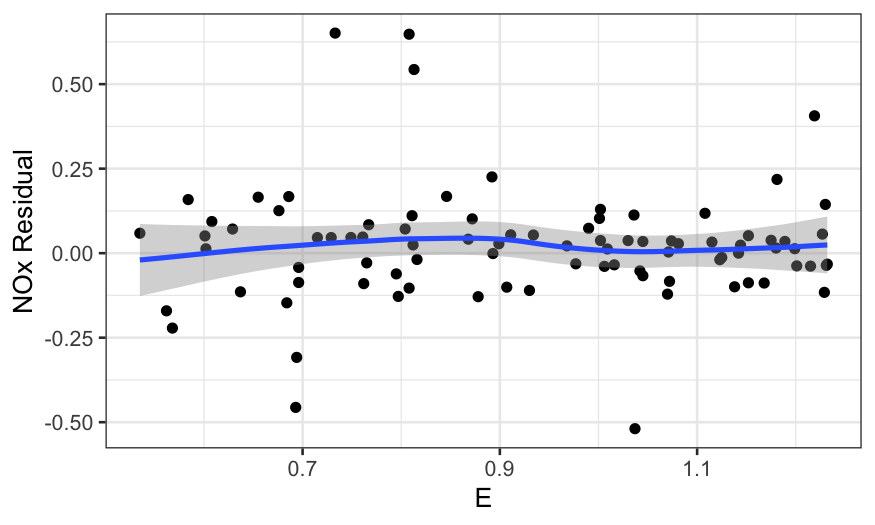
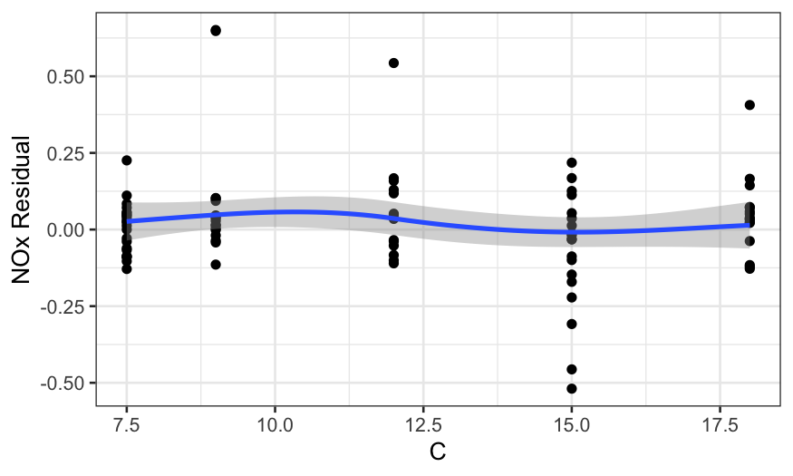
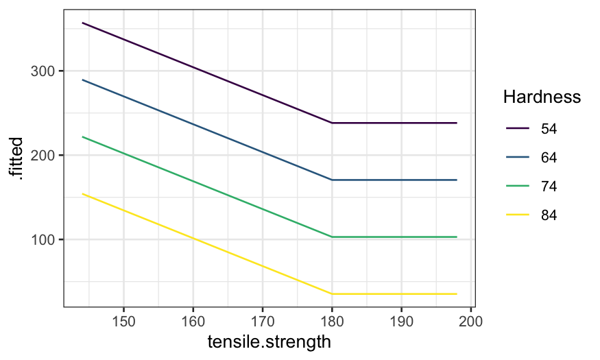

Stat 470/670 Lecture 12: More interactions, coplots,
and modeling
Julia Fukuyama
Today: building and checking models with trivariate data
LOESS on ethanol data
load("../../datasets/lattice.RData")
head(ethanol)
## NOx C E
## 1 3.741 12 0.907
## 2 2.295 12 0.761
## 3 1.498 12 1.108
## 4 2.881 12 1.016
## 5 0.760 12 1.189
## 6 3.120 9 1.001
ethanol_lo = loess(NOx ~ C * E, data = ethanol, span = 1/3, parametric = "C",
drop.square = "C", family = "symmetric", degree = 2)
Arguments to the loess function:
First argument is the formula: we want to model NOx
as a function of C and E, with an interaction
between the two variables.
data gives tha data frame the variables come
from.
span gives the fraction of the observations that
have non-zero weight for each of the local regressions, the same as
\(\alpha\) in the text.
degree gives the degree of the local polynomial. If
we have variables \(x\) and \(y\), degree = \(1\) means the local regressions use \(x\) and \(y\) as predictors, and degree = \(2\) means the local regressions will use
\(x\), \(y\), \(xy\), \(x^2\), and \(y^2\) as predictors.
family is either symmetric or gaussian, gaussian
means the local regressions are fit by least squares, while symmetric
means they are fit with robust regression using Tukey’s
biweight.
parametric: The names of variables for which we want
to constrain the fit to be parametric. The parametric fit is achieved by
excluding these variables from the distance calculations when deciding
on observation weights in the local regressions.
drop.square: By default, if degree = \(2\) and one of the variables is constrained
to be fit parametrically, the parametric fit will be of a degree \(2\) polynomial. drop.square =
TRUE changes this so that the parametric fit is linear instead of
quadratic.
What do the fitted values look like? First let’s make a coplot of the
fitted value given E.
prediction_grid = data.frame(expand.grid(C = c(7.5, 9, 12, 15, 18), E = seq(0.6, 1.2, by = .05)))
ethanol_preds = augment(ethanol_lo, newdata = prediction_grid)
ggplot(ethanol_preds) +
geom_line(aes(x = C, y = .fitted)) +
facet_wrap(~ E, ncol = 7)

Then a coplot of the fitted values given C.
ggplot(ethanol_preds) +
geom_line(aes(x = E, y = .fitted)) +
facet_wrap(~ C, ncol = 3)

More useful without the faceting:
ggplot(ethanol_preds) +
geom_line(aes(x = E, y = .fitted, color = factor(C, levels = unique(C), ordered = TRUE))) +
guides(color = guide_legend(title = "C"))
Plotting residuals
Remember augment from broom: if you just
ask it to augment the output from a linear model, it will give back a
data frame with the predictor variables used in the model along with
residuals and fitted values.
Here we’re looking for structure: systematic relationships between
the residuals and the preditor variables. If we see a relationship
between the predictors and the residuals, it indicates that the form of
the model doesn’t fit well and we need to use something more
flexible.
We first look at the residuals by E and
C:
ethanol_resid = augment(ethanol_lo)
ggplot(ethanol_resid, aes(x = E, y = .resid)) +
geom_point() +
stat_smooth(method = "loess", method.args = list(degree = 1, family = "symmetric"))
## `geom_smooth()` using formula 'y ~ x'

ggplot(ethanol_resid, aes(x = C, y = .resid)) +
geom_point() +
stat_smooth(method = "loess", method.args = list(degree = 1, family = "symmetric"))
## `geom_smooth()` using formula 'y ~ x'

Note: using the robust version of loess (family =
"symmetric") helps a lot here. If we use the non-robust version,
the loess curve is pulled away from zero by the outliers.
ethanol_resid = augment(ethanol_lo)
ggplot(ethanol_resid, aes(x = E, y = .resid)) +
geom_point() +
stat_smooth(method = "loess", method.args = list(degree = 1))
## `geom_smooth()` using formula 'y ~ x'

ggplot(ethanol_resid, aes(x = C, y = .resid)) +
geom_point() +
stat_smooth(method = "loess", method.args = list(degree = 1))
## `geom_smooth()` using formula 'y ~ x'

It’s also useful to look at coplots:
ggplot(ethanol_resid, aes(x = E, y = .resid)) +
geom_point() +
facet_grid(~ C) +
stat_smooth(method = "loess", method.args = list(degree = 1, family = "symmetric"))
## `geom_smooth()` using formula 'y ~ x'

In all of the residual plots, we see outliers, but not any major
dependence of the residuals on the predictors.
Residuals to check model assumptions
It’s also a good idea to check on homoscedasticity and normality of
the residuals.
To check for homoscedasticity, we plot the residuals by the fitted
value:
ggplot(ethanol_resid, aes(x = .fitted, y = sqrt(abs(.resid)))) +
geom_point() +
stat_smooth(method = "loess", method.args = list(degree = 1, family = "symmetric"))
## `geom_smooth()` using formula 'y ~ x'

To check for normality, we make a QQ plot:
ggplot(ethanol_resid) + stat_qq(aes(sample = .resid))

We see that the residuals are quite heavy-tailed. This means:
What we’ve learned
NOx depends on equivalence ratio in a non-monotonic way.
Conditional on equivalence ratio, NOx depends on concentration in
an approximately linear way.
The interaction is important: there’s no real way to remove it
from the data.
The usual inference based on an assumption of normal errors is
inappropriate.
Rubber data
Reading: Cleveland pp. 180-187, 200-213
The data frame rubber in lattice.RData contains three
measurements on 30 specimens of tire rubber.
The variables are:
hardness: How much the rubber rebounds after being
indented.
tensile.strength: The force per cross-sectional area
required to break the rubber (in kg/cm2).
abrasion.loss: The amount of material lost to
abrasion when rubbing it per unit energy (in grams per hp-hour). This
gives you an idea how fast the tire will wear away when you drive. If we
had to choose a “response” variable, it would be this one.
Pairs plot of the three variables
## Registered S3 method overwritten by 'GGally':
## method from
## +.gg ggplot2
ggpairs(rubber[,c("hardness", "tensile.strength", "abrasion.loss")])
Coplot of abrasion loss and tensile strength given hardness
coplot_hardness = make_coplot_df(rubber, "hardness", number_bins = 8)
ggplot(coplot_hardness, aes(x = tensile.strength, y = abrasion.loss)) +
geom_point() +
facet_wrap(~ interval, ncol = 4) +
stat_smooth(method = "lm", se = FALSE)
## `geom_smooth()` using formula 'y ~ x'

ggplot(coplot_hardness, aes(x = tensile.strength, y = abrasion.loss)) +
geom_point() +
facet_wrap(~ interval, ncol = 4) +
stat_smooth(method = "loess", method.args = list(degree = 1), se = FALSE)
## `geom_smooth()` using formula 'y ~ x'

Coplot of abrasion loss and hardness given tensile strength
coplot_ts = make_coplot_df(rubber, "tensile.strength", number_bins = 8)
ggplot(coplot_ts, aes(x = hardness, y = abrasion.loss)) +
geom_point() +
facet_wrap(~ interval, ncol = 4) +
stat_smooth(method = "lm", se = FALSE)
## `geom_smooth()` using formula 'y ~ x'
ggplot(coplot_ts, aes(x = hardness, y = abrasion.loss)) +
geom_point() +
facet_wrap(~ interval, ncol = 4) +
stat_smooth(method = "loess", method.args = list(span = .5, degree = 1), se = FALSE)
## `geom_smooth()` using formula 'y ~ x'

ggplot(coplot_ts, aes(x = hardness, y = abrasion.loss, color = interval)) +
stat_smooth(method = "loess", method.args = list(span = .5, degree = 1), se = FALSE)
## `geom_smooth()` using formula 'y ~ x'
Exercises
Try making the following additional plots:
Make the same coplot as in the previous slide, but with a loess
smooth instead of a linear smooth. What do you think are good parameters
for the degree and span arguments?
It is sometimes easier to compare smoothers to each other if they
are on the same plot instead of faceted out. Using the same
coplot_ts data frame as on the previous slide, make a plot
with one smoother per tensile.strength interval, i.e., the
same smoothers as in the previous plot, but not faceted out. Let color
indicate which tensile.strength interval the smoother
corresponds to.
Questions:
What do these plots tell you about the interaction between
tensile.strength and hardness? Do you think
that we need to fit an interaction?
Based on the coplots given hardness and given
tensile.strength, do you think a linear fit is sufficient
for predicting abrasion.loss, or do we need to use a
non-linear function?
Building a model
Let’s start off building a model with no interaction but with a
non-linear function of tensile.strength.
To do this, we need to:
Decide on a non-linear function to use.
Implement this function in R.
Apply the function to tensile.strength.
Deciding on a function
We want our non-linear function to be linear for values of
tensile.strength below 180, flat for values above 180, and
continuous. One such function is \[
f(x) = \begin{cases}
x - 180 & x \le 180\\
0 & x > 180
\end{cases}
\]
Writing the function in R
The way we would write this in R would be
tslow = function(x) {
return((x - 180) * (x < 180))
}
Applying the function to tensile.strength
And to create a variable corresponding to this transformation of
tensile strength, we could use
rubber %>% mutate(ts.low = tslow(tensile.strength))
However, we don’t need to do that because Cleveland has already done
it for us (the variable ts.low already exists in the data
set and is exactly this function of tensile.strength).
Fitting and visualizing the model
To fit the model:
##
## Attaching package: 'MASS'
## The following object is masked from 'package:dplyr':
##
## select
rubber.rlm = rlm(abrasion.loss ~ hardness + ts.low, data = rubber,
psi = psi.bisquare)
To visualize the fitted model, we need to get fitted values from the
model on a grid of values of the two predictors.
library(broom)
rubber.grid = expand.grid(hardness = c(54, 64, 74, 84),
tensile.strength = c(144, 162, 180, 198)) %>% data.frame
rubber.grid = rubber.grid %>% mutate(ts.low = tslow(tensile.strength))
rubber.predict = augment(rubber.rlm, newdata = rubber.grid)
rubber.predict
## # A tibble: 16 × 4
## hardness tensile.strength ts.low .fitted
## <dbl> <dbl> <dbl> <dbl>
## 1 54 144 -36 357.
## 2 64 144 -36 289.
## 3 74 144 -36 222.
## 4 84 144 -36 154.
## 5 54 162 -18 298.
## 6 64 162 -18 230.
## 7 74 162 -18 162.
## 8 84 162 -18 94.8
## 9 54 180 0 238.
## 10 64 180 0 171.
## 11 74 180 0 103.
## 12 84 180 0 35.3
## 13 54 198 0 238.
## 14 64 198 0 171.
## 15 74 198 0 103.
## 16 84 198 0 35.3
Once we have the fitted values, we can make a coplot of the fitted
model. We’ll start with hardness as the given variable:
ggplot(rubber.predict) +
geom_line(aes(x = tensile.strength, y = .fitted)) +
facet_grid(~ hardness)

ggplot(rubber.predict) +
geom_line(aes(x = tensile.strength, y = .fitted, color = factor(hardness, ordered = TRUE))) +
guides(color = guide_legend(title = "Hardness"))

Note that the first plot is a coplot, the second doesn’t have a name
but reports the same information in a different way.
Then a coplot with tensile.strength as the given
variable:
ggplot(rubber.predict) +
geom_line(aes(x = hardness, y = .fitted)) +
facet_grid(~ tensile.strength)

ggplot(rubber.predict) +
geom_line(aes(x = hardness, y = .fitted, color = factor(tensile.strength, ordered = TRUE))) +
guides(color = guide_legend(title = "Tensile strength"))
Residuals
rubber.resid = data.frame(rubber, .resid = residuals(rubber.rlm))
ggplot(rubber.resid, aes(x = tensile.strength, y = .resid)) + geom_point() +
stat_smooth(method = "loess", span = 1, method.args = list(degree = 1, family = "symmetric")) +
geom_abline(slope = 0, intercept = 0)
## `geom_smooth()` using formula 'y ~ x'

ggplot(rubber.resid, aes(x = hardness, y = .resid)) + geom_point() +
stat_smooth(method = "loess", span = 1, method.args = list(degree = 1, family = "symmetric")) +
geom_abline(slope = 0, intercept = 0)
## `geom_smooth()` using formula 'y ~ x'

Coplots of the residuals
resid_co_hardness = make_coplot_df(rubber.resid, faceting_variable = "hardness", number_bins = 4)
ggplot(resid_co_hardness, aes(x = tensile.strength, y = .resid)) +
geom_point() +
facet_grid(~ interval) +
stat_smooth(method = "loess", method.args = list(degree = 1, family = "symmetric"))
## `geom_smooth()` using formula 'y ~ x'
resid_co_ts = make_coplot_df(rubber.resid, faceting_variable = "tensile.strength", number_bins = 4)
ggplot(resid_co_ts, aes(x = hardness, y = .resid)) +
geom_point() +
facet_grid(~ interval) +
stat_smooth(method = "loess", method.args = list(degree = 1, family = "symmetric"))
## `geom_smooth()` using formula 'y ~ x'
Second-round model
From the residual plots, it looks like we might actually do better
fitting an interaction between tensile.strength and
hardness.
Exercises:
Refit a linear model that predicts abrasion.loss
using an interaction between our non-linear transformation of
tensile.strength and hardness (i.e., change
abrasion.loss ~ ts.low + hardness to abrasion.loss ~
ts.low * hardness).
Plot the fitted values from the interaction model on the same
grid of predictor variables we used in the no-interaction model. How
does the form of the fits change when you add the interaction? Why is
this?
Make residual plots and coplots for the interaction model in the
same way we did for the no-interaction model. Do you like this model
better?